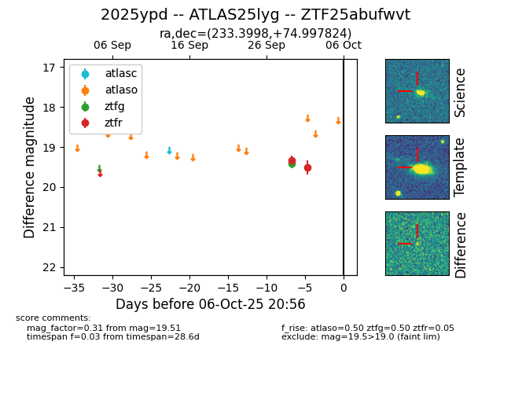

FINK: ZTF25abufwvt
Lasair: ZTF25abufwvt
ALeRCE: ZTF25abufwvt
TNS: 2025ypd
YSE: 2025ypd
ZTF25abufwvt (ztf,fink)
2025ypd (tns,yse)
ATLAS25lyg (atlas)
equatorial (ra, dec) = (233.3998,+74.99782)
galactic (l, b) = (110.6053,+37.98955)

last atlaso=nan, ztfg=19.42, ztfr=19.51
1 atlaso, 1 ztfg, 2 ztfr detections